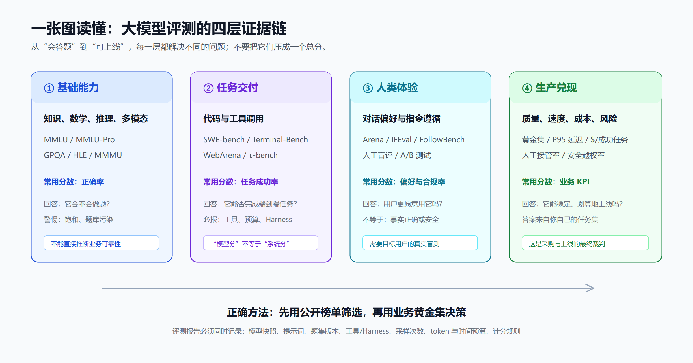

大模型评测全指南：从 MMLU、SWE-bench 到 Arena，读懂指标、排名与真实能力
如果把大模型当作候选员工，榜单像一组标准化笔试：有的考知识，有的考数学，有的让它修复真实代码，还有的让用户在盲测中选“更喜欢谁”。问题是，行业常把这些彼此不同的考试压成一句“谁最强”。这会直接导致错误选型：知识题高分的模型未必会用工具，编程智能体（Coding Agent，能规划并调用工具完成多步任务的系统）的高任务成功率也未必意味着对话更可信；而模型竞技场（Arena，原 Chatbot Arena 的匿名双模型盲测排行榜）的偏好积分并不是事实准确率。本篇给出一套能落到采购、开发与上线决策中的读榜框架：先理解每把尺子在量什么，再理解排名为什么会变，最后用自己的黄金集完成裁决。
为便于阅读，本文后续首次涉及的缩写均在下表给出英文全称与中文含义；后文将直接使用简称。
| 缩写/术语 | 英文全称 | 中文含义 |
|---|---|---|
| MMLU | Massive Multitask Language Understanding | 大规模多任务语言理解基准 |
| MMLU-Pro | Massive Multitask Language Understanding–Professional | MMLU 的更高难度、抗题型投机扩展版 |
| GPQA | Graduate-Level Google-Proof Q&A | 研究生级、难以经简单检索获得答案的科学问答基准 |
| AIME | American Invitational Mathematics Examination | 美国数学邀请赛，用于检验竞赛数学推理 |
| HLE | Humanity’s Last Exam | “人类最后的考试”高难跨学科评测 |
| MMMU | Massive Multi-discipline Multimodal Understanding and Reasoning | 大规模多学科多模态理解与推理基准 |
| SWE-bench | Software Engineering Benchmark | 基于真实开源 Issue 的软件工程任务基准 |
| ReAct | Reasoning and Acting | 将推理与工具行动交替执行的 Agent 工作范式 |
| CI | Continuous Integration | 持续集成，即自动构建与测试流程 |
| RAG | Retrieval-Augmented Generation | 检索增强生成，先检索资料再生成回答 |
| F1 | F1 Score | 综合精确率与召回率的调和平均指标 |
| SLA | Service Level Agreement | 服务等级协议，约定可用性、响应时间等目标 |

先把结论放在前面：分数不是同一种单位
“模型 A 91 分、模型 B 1,500 分、模型 C 60 分，谁更强？”这个问题没有答案。MMLU 的 91 是特定题目上的正确率；Arena 的 1,500 是人类盲选累积出来的相对偏好；综合指数的 60 是机构按自己的权重合成的分数。它们的题集、样本、工具权限和计分方式都不同，不能相加、不能平均，更不能用某个总榜替代业务验证。
更实用的判断顺序是：公开基准用于初筛，垂直任务用于复筛，生产指标用于决策。 公开榜单让你快速排除明显不适合的模型；真实业务题集决定其是否能完成关键工作；延迟、成本、失败恢复、人工接管和安全边界，决定它是否值得上线。越接近生产，越不能迷信通用排名。
第一层：能力基准在测什么
MMLU：广泛知识的“期末考试”，不是通用智能证书
MMLU 覆盖 57 个学科，从基础数学、历史、法律到计算机科学，以多选题正确率衡量模型的多任务知识与解题能力。它的优点是覆盖广、成本低、长期可比；它的弱点同样清晰：选择题可以借助选项排除，题目格式固定，热门题集还会面对训练数据污染和饱和风险。因此，MMLU 高分可说明模型有较强通识底座，却不能证明它会调用企业工具、输出合规 JSON、处理长文档，或在不确定时诚实地说“我不知道”。
读 MMLU 时至少问三件事：模型是零样本还是少样本？是否开启了推理模式或工具？报告的是原始 MMLU、MMLU-Pro，还是某个提示词优化后的变体？当头部模型只有一两个百分点差距时，更应查看题量、标准差与复现实验，而不是把小数点后的一点差异写成能力代差。
GPQA、AIME 与 HLE：把难度抬高，也把读数门槛抬高
GPQA Diamond 更偏向研究生水平的科学推理，AIME、MATH-500 则聚焦数学推导；它们比常规知识题更能暴露多步推理缺陷，但仍通常以最终答案正确率计分。高分只表示在明确、封闭答案题上表现好，不代表过程必然可靠，也无法直接衡量模型是否知道自己会不会。
Humanity’s Last Exam（HLE） 试图缓解旧基准饱和：最终题集包含 2,500 道高难、跨学科、多模态问题，既看准确率，也报告校准误差。校准的直觉很简单：一个答对 50% 的系统，如果平均自信度也是约 50%，就比“只答对 50% 却总说 95% 把握”的系统更可靠。后者在生产中更容易制造高置信幻觉，增加人工复核成本。
截至本文整理时，HLE 官方实时页以 95% 置信区间的统计显著性确定排名。gemini-3.1-pro-preview (thinking high) 与 gpt-5.4-pro-2026-03-05 均为第 1 名，原始准确率分别为 46.44% 与 44.32%；Muse Spark为第 3 名、40.56%。这正是一个重要示例：原始正确率更高不必然产生单独的更高排名，区间重叠时应视为同一统计梯队。页面还显示这类前沿题离“满分”很远，所以别把旧基准上的接近满分误解为通用问题已被解决。
MMMU：看懂图片，不等于拥有视觉 Agent
MMMU 把图表、示意图、公式与多学科问题结合，用来衡量大学水平的多模态理解和推理。它适合筛查模型是否能阅读图文混合材料、专业图表和视觉化题目，但不直接测试在网页中定位按钮、连续点击、上传文件或处理视频流的能力。选型时应把“视觉问答分数”与实际要做的票据解析、医学影像辅助、图表问答或 GUI 操作任务分开验证。
第二层：代码与 Agent 基准，到底是在测模型还是系统
SWE-bench：真实 Issue 修复，比函数题更接近工程
SWE-bench 把开源仓库、GitHub Issue 与测试环境交给系统，要求其修改代码并让目标测试通过。Verified 是经过人工筛选的 500 个实例；官网还提供 Lite、多语言和多模态任务集。它比 HumanEval 一类小函数基准更接近工程，因为系统需要检索仓库、理解问题、编辑多个文件、运行测试并迭代补丁。
但 SWE-bench 分数首先是系统分。同一个基础模型，换一套 Agent Harness、代码搜索、上下文压缩、工具说明、最大轮次、重试策略、并行采样或联网权限，成功率都可能明显变化。看到“某模型解决率 70%”时，必须确认：模型版本和日期是什么？使用哪种 Agent？是否统一 mini-SWE-agent？是否允许搜索、执行任意终端命令或联网？每题的时间、token、调用次数和并发预算是多少？只有这些条件可比，分数才可比。
这也解释了为什么 Mini-SWE-Agent 的评测思路 有价值：它用尽量简单的 Bash-first ReAct 循环固定运行外壳，减少“脚手架替模型赢分”的混淆。不过，统一 Harness 也不等于生产表现；私有仓库的业务语义、跨服务依赖、权限审批、CI 与发布责任，并不包含在公开题集中。
Agent 评测要额外看四个维度
- 任务成功率：最终结果是否达成，而不是中间步骤看起来是否合理。
- 预算与效率：每个成功任务消耗多少 token、工具调用、墙钟时间和真实成本。
- 风险与恢复：是否越权、是否误删、是否会在失败后停止并交给人类。
- 可维护性：补丁能否通过完整测试、代码审查和长期维护，而非只对隐藏测试投机取巧。
对有 Agent 需求的团队，建议先用公开基准筛选，再从历史工单中抽取 30 到 100 个脱敏任务做盲测。保留问题、初始状态和验收标准，却不要提供最终补丁；记录完整轨迹和每次人工接管。这样得到的“单位成功任务成本”和“可接受失败率”，通常比任何全球排名更接近采购答案。
第三层：Arena 测的是人类偏好，特别重要，也特别容易被误读
Arena 采用匿名双模型对答：用户输入同一提示，再对两个隐藏身份的回答投票，平台据此估计相对偏好并生成动态排名。它最擅长捕捉开放式对话中的帮助性、表达、结构、文风和部分复杂指令体验——这些是静态选择题不容易覆盖的能力。
但偏好不是正确性。一个更流畅、更长、更会迎合的答案可能赢得投票，却未必更准确；专业领域的小众任务在公众样本中权重也可能不够。Arena 的读法应是“在某段时间、某类用户与某套提示分布下，用户更喜欢谁”，而不是“该模型在所有能力上更强”。页面排名会随新模型、投票样本和置信范围变化，发布材料应保留抓取时间、具体榜单与模型别名，不应把某天的名次当作永久事实。
第四层：综合榜很方便，但权重是观点，不是自然规律
Artificial Analysis Intelligence Index 将多个推理、代码和 Agent 评测合并，当前方法说明中涵盖 GDPval-AA v2、τ³-Banking、Terminal-Bench、SciCode、HLE、GPQA Diamond 等多项测试；其模型榜还同步展示速度、首 token 延迟、上下文与单位任务成本。对于“先从数百个模型缩小到十个候选”的工作，这类多指标面板非常高效。
但综合指数的前提是权重选择。把代码、科学、金融工具调用各占多少比重，本质上是评测者的产品判断；你的客服机器人、代码助手或研究助理未必拥有同样的任务分布。正确姿势是把综合榜当作候选池：筛出性能档位、开源/闭源、价格和速度合适的模型，再在自己的业务数据上重新加权。不要因为一个综合分更高，就跳过安全、中文、结构化输出和集成环境测试。
最新榜单如何读：一份不会很快过期的读榜清单
| 你真正想知道的问题 | 优先看什么 | 分数如何解释 | 必须补充的信息 |
|---|---|---|---|
| 模型能否处理高难学科推理？ | HLE、GPQA、数学基准 | 正确率与校准误差 | 题集版本、是否用工具、置信区间 |
| 能否读懂图表和图文材料？ | MMMU 等多模态基准 | 图文题正确率 | 图像类型、语言、真实文档盲测 |
| 能否修复真实代码问题？ | SWE-bench / Terminal-Bench | 端到端任务成功率 | Agent、工具、测试、预算与权限 |
| 用户会不会喜欢其回答？ | Arena、人工 A/B 测试 | 相对偏好或胜率 | 用户画像、提示分布、采样量 |
| 能否以预算和 SLA 稳定上线？ | 自建黄金集与生产观测 | 成功任务成本与 P95 | 失败恢复、人工接管、合规与安全 |
所谓“当前最新排名”，必须带上榜单名、任务版本、模型快照、评测设置和日期五个标签。HLE 的并列第一示例说明了置信区间的重要性；Arena 的动态偏好说明了样本分布的重要性；SWE-bench 的系统分说明了 Harness 的重要性。少一个标签，排名的解释力都会显著下降。
企业自建评测：把“最好模型”改写成“最适合我们模型”
第一步，按业务风险分层建黄金集。将真实任务分为低风险生成、信息抽取、检索问答、代码变更、决策辅助等类别；每类至少保留正常样本、边界样本、易混淆样本和明确拒答样本。对高风险任务采用双人标注或领域专家仲裁，并把答案、依据、允许工具和失败条件写清楚。
第二步，固定可复现实验。每轮记录模型名称与版本、系统提示词、温度、最大输出、RAG 语料版本、工具清单、Agent Harness、轮次、token 与时间预算。否则一次“模型升级后变好”的结论，可能只是提示词、检索或外部工具变了。对编程与 Agent 任务，还应保存命令轨迹、最终 diff、测试日志与权限事件。
第三步，不要只算平均准确率。信息抽取可看字段级 F1 与格式合规率；客服问答可看事实正确率、拒答正确率与人工升级率；代码 Agent 可看通过率、回归率、审查通过率和每个成功任务成本。把 P50 与 P95 延迟拆开看，把成功路径和失败路径成本都纳入，才能发现“聪明但太慢”或“便宜却制造大量返工”的模型。
第四步，持续回归而非一次性跑分。每次换模型、换提示词、改 RAG、改工具或更新权限策略，都要跑同一套核心集，并保留历史结果。对于长期运行的 Agent，应接入调用、工具、成本和人工接管的可观测性；可参考 Langfuse LLM/Agent 可观测性实践，让失败能定位到模型、上下文、工具还是工作流，而不是只留下一个模糊的“回答不好”。
五个最常见的误区
-
把总榜第一当作所有任务第一。 没有一个统一基准能完整覆盖知识、代码、中文、长上下文、工具、成本与风险。
-
跨论文、跨厂商直接拼表。 不同版本、提示、工具、采样数和预算的数字，只能做方向性参考。
-
忽略统计不确定性。 小幅领先可能来自抽样波动；优先看置信区间、题量和是否可复现。
-
只测成功，不测失败。 生产事故往往发生在模型不确定时仍自信输出、越权调用工具或无法停止的场景。
-
用公开题集替代业务验收。 公开榜单告诉你“值得试”，黄金集才告诉你“值得买、值得上线”。
小结：把排行榜当地图，不要当终点
MMLU 告诉我们模型是否具备广泛知识；HLE、GPQA 和数学题看它在高难封闭题上能走多远；MMMU 检验图文理解；SWE-bench 与各类 Agent 基准衡量端到端任务交付；Arena 则捕捉人类主观体验。它们都重要，但回答的从来不是同一个问题。
因此，成熟的选型流程应当是：用公开榜单建立候选池，用统一的评测设置比较模型与系统，用真实黄金集验证质量和风险，最后用成功任务成本与服务指标决定上线。读懂这套方法后，榜单不再是“谁最强”的口号，而会成为你设计更可靠 AI 产品的一张地图。
免责声明
本文基于截至 2026 年 8 月 18 日可访问的公开论文、官方说明和动态榜单整理。排行榜、模型版本、题集与评测设置会持续变化，文中 HLE 数据仅为写作时的可核验快照；不构成采购、投资、安全或合规建议。涉及生产部署时，请以自身脱敏业务集、权限边界与独立复现实验为准。
参考来源
- Measuring Massive Multitask Language Understanding（MMLU）
- MMMU：多学科多模态理解与推理基准
- Humanity’s Last Exam 官方榜单与方法
- SWE-bench 官方排行榜与任务集说明
- Introducing SWE-bench Verified（OpenAI）
- Arena 官方榜单
- Artificial Analysis Intelligence Index
- Artificial Analysis 模型榜单
- OpenCompass 开源评测框架
相关阅读
- Mini-SWE-Agent：代码模型评测底座
- 开源大模型选型对比 2026
- Agent 治理与可观测性的隐藏成本
- Langfuse：LLM 与 Agent 可观测性指南
- 企业 AI Agent 部署指南
推荐搭配装备
善其事，利其器。以下硬件能最大化你的AI体验👇
🔗 通过以上链接购买可支持本站持续运营 🙏